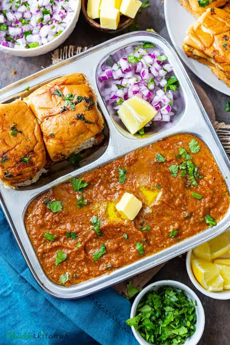

Pav Bhaji

Description
Pav bhaji is an iconic dish from Mumbai, which is also hugely popular as street food all over India.
It first came into picture in Mumbai as a quick lunch option for textile mill workers.
Gradually, over the years, the dish became widespread.
Today, you can find it as a common street food and a special in restaurants in Mumbai and the rest of India.
Ingredients
- Mixed Vegetables
- Green Peas
- Pav Bhaji Masala
- Butter
- Pav
Steps
- Take potato, cauliflower, beans, beetroot and carrot in a pressure cooker and cover it with water.
Pressure cook for 4 whistle, simmer for 10 mins.
Turn off the heat and let them steam go all by itself.
Open the cooker and mash the veggies roughly with a masher, Set aside.
- Melt butter in a kadai and add in cumin seeds and let them sizzle.
- Now add in onions and capsicum. cook till golden brown.
- Add in green chilli and ginger garlic paste and saute for a min.
- Add in all spice powders and mix well.Add in chopped tomatoes and mix well.
- Season with salt and sugar.Cook till the tomatoes turn mushy and become saucy
- Add in water and peas. Bring it to a boil.
- Now add in all the mashed vegetables and mix well.
- Cover it and simmer for 10-15 mins..
- Add in lemon juice and coriander leaves. Mix well. Bhaji done.
- To serve pav bhaji..Heat a tblspn of butter and add a cut open pav bun and toast for 1 min till golden.
Remove to a plate.
- Add a tblspn of butter in the same tawa and add some bhaji on top of it.
Cook till it is thick and bubbly.
Transfer this to the plate.
-
Dollop a spoonful of butter on top and add some onions too.
Squeeze some lemon juice and serve.
Return to Main Page